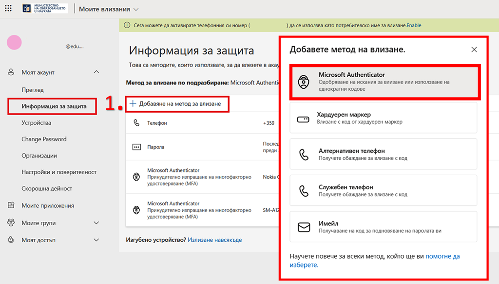
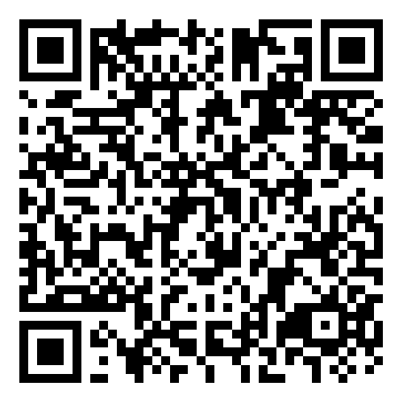
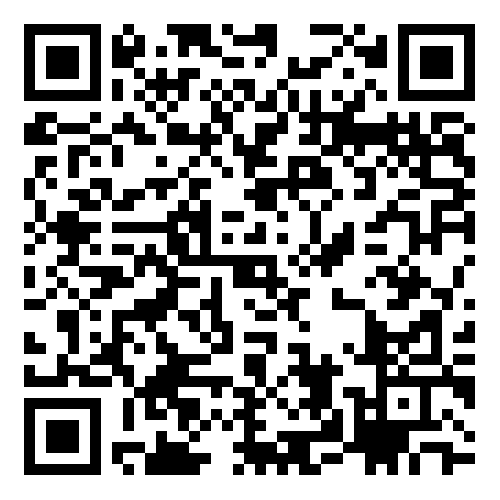
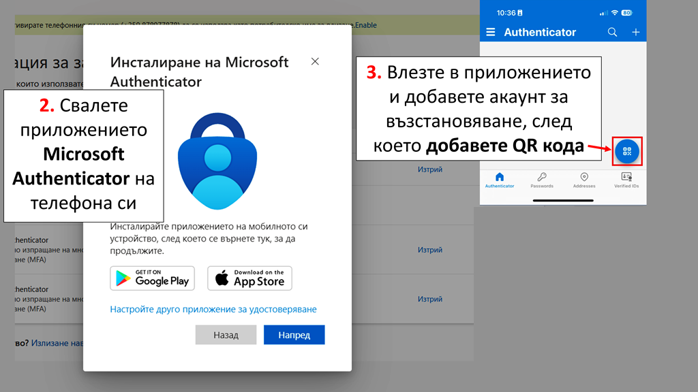
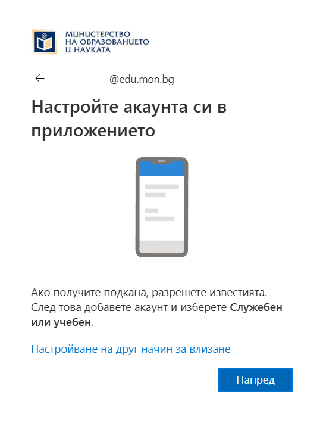
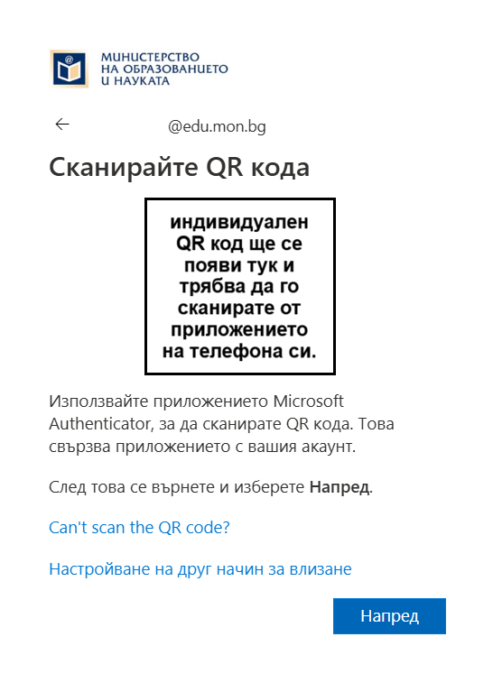
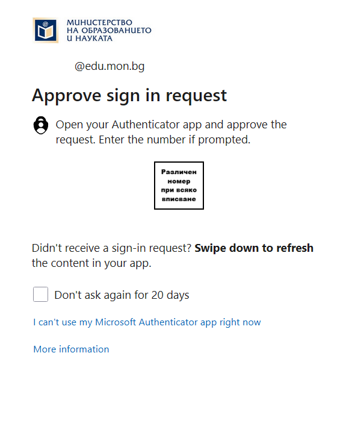
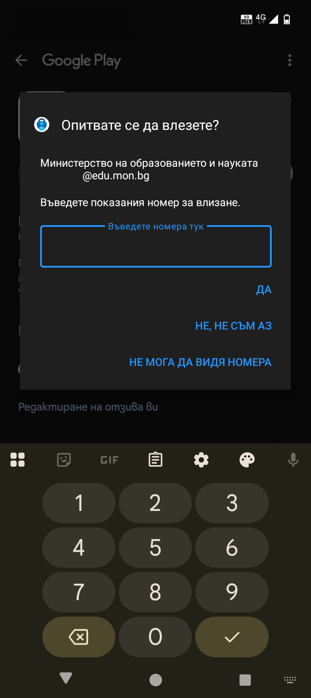
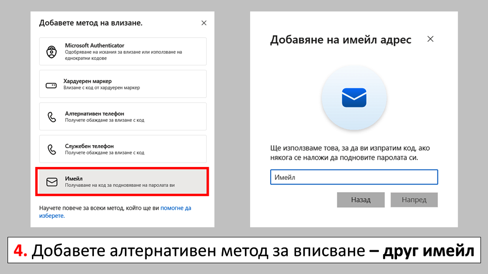

Във връзка с използване на дигитални ресурси и профили в МОН Инструкция за добавяне на двуфакторна защита. Внимание, използвайте на своя отговорност - отворете следният линк - https://mysignins.microsoft.com/security-info - впишете се с потребителското си име в @edu.mon.bg
*следващите стъпки изпълнете от смартфона си: QR кодове за сваляне на приложението *създадени благодарение на Adobe Express QR code generator

QR код за телефон на Android QR код за iOS IPhone
*следващите стъпки изпълнете от компютъра: - след като настроите приложението на смартфона, продължете с добавянето на двуфакторна защита:
->
- след добавяне на двуфакторна защита, при всяко вписване в акаунта ще получите уникален номер изписан на екрана; - ще получите известие на телефона си за опит за влизане в профила ви; - за да докажете, че вие се вписвате, трябва да напишете номера от екрана на компютъра в приложението на телефона:
->
- така телефонът ви се превръща в token за вписване в профила ви. *задължително добавете още един алтернативен метод за вписване, в случай на повреда на устройството ви.
Готово, вече профилът ви е настроен успешно. Инструкция за използване на дигитални ресурси